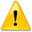

This validator checks the markup validity of Web documents in HTML, XHTML, SMIL, MathML, etc. If you wish to validate specific content such as RSS/Atom feeds or CSS stylesheets, MobileOK content, or to find broken links, there are other validators and tools available.

This instance of the validator is either a development version used for testing purposes, or a local copy of the W3C Markup Validator software used for development and testing purposes.
The official validation service supported by the W3C is at validator.w3.org.